1. Reclaiming African History
The Senegalese embrace and take pride in African culture and history more than any country or city I’ve been to. I’ve been to places in Africa and the diaspora where they take pride in their specific country or culture and African history as a whole. But nowhere have I seen such a display pride Africaness/Blackness. From the many museums to the names of locations to the Pan-African graffiti that decorates Dakar, there is no doubt that Senegalese are proud to be African.
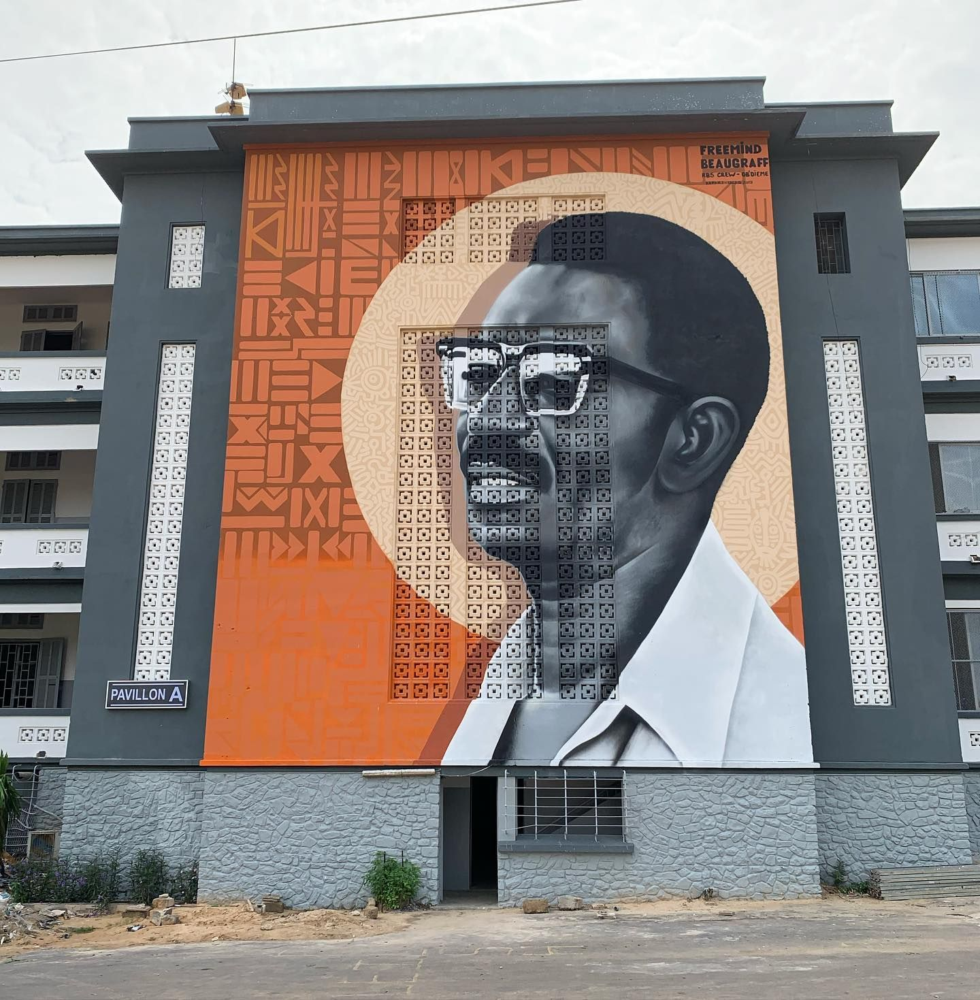
History has and is being stolen from us. All mankind has been robbed of the truth, and we as Africans have been robbed of our history. While there have been many scholars who have gone to great lengths to restore our history,1 it would be hard to name anyone who has done more than Dr. Cheik Anta Diop. The Senegalese polymath used his training in history, anthropology, linguistics, and chemistry to support the facts that:
- man originated in Africa
- civilization originated in Africa
- Ancient Egypt was a Black, African civilization
In honor of his many accomplishments, the University of Dakar, where he established a radiocarbon dating laboratory, was renamed to the University of Cheikh Anta Diop. I got a chance to visit the campus and was moved by all of the Pan-African murals and graffiti covering walls.
2. Africa’s Largest Statue
The African Renaissance Monument is a 49 m (161 ft) tall bronze statue representing the triumph of African liberation and rebirth of the African man and his family. The monument symbolizes the need to reclaim the power, heritage, and legacy of Africa.
It is the tallest statue in Africa and is taller than the Statue of Liberty and Christ the Redeemer.
3. Gorée Island - Living Memorial of the African Holocaust
Gorée Island is a small island located off the coast of Dakar. It was a hub of the Atlantic slave trade in the 18th and 19th centuries. On Goree there is the House of Slaves, where captured Africans were detained before setting sail to enslavement in the West. Now a small town with ~1,500 inhabited, Gorée also has a museum, restaurants, shops, hotels, a clinic, and a school.

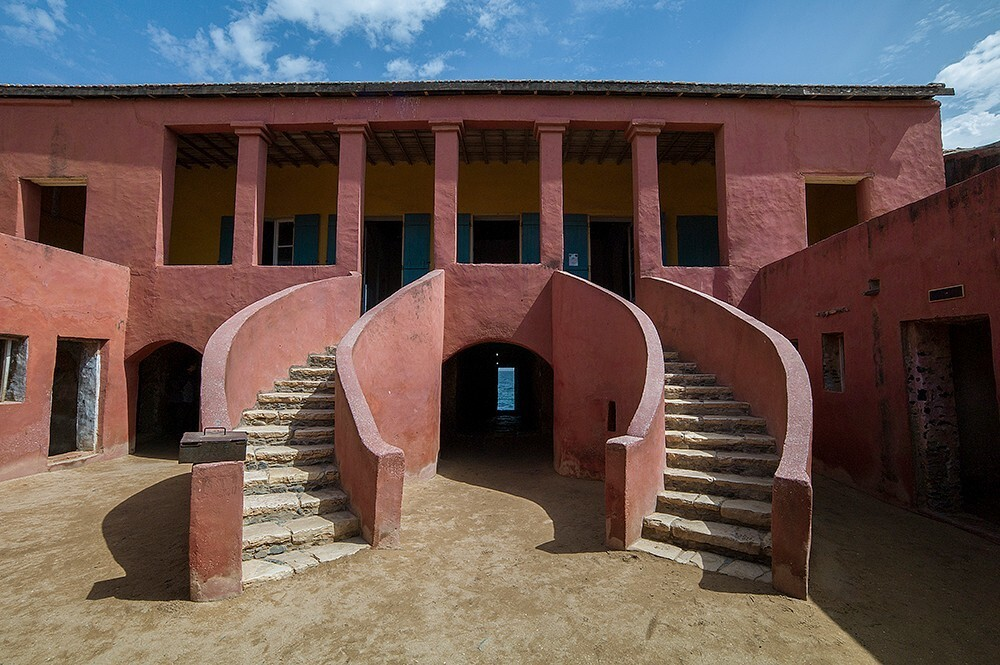
4. Rapid, Widespread Development
Dakar is not only a good place to learn Africa’s history. It’s also a place to see Africa’s future. All throughout the city, there are massive commercial, residential, and infrastructural developments underway.
5. Dope Art Scene
Dakar has a vibrant art scene, a lot of which promotes Pan-Africanism and Black pride. Graffiti draping the entire city can be seen on buildings and bridges and whatnot. Sculptures and statues of Senegalese heroes, animals, and so much more are everywhere. And if you want to see a lot of artwork in one place, you have several museums and art galleries as options.
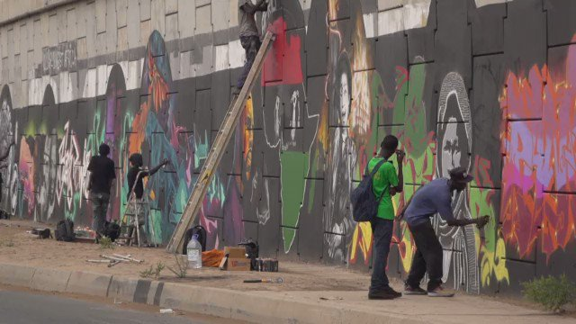
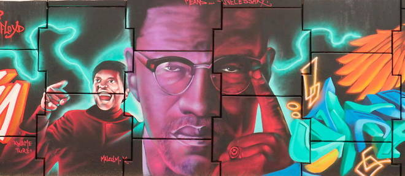
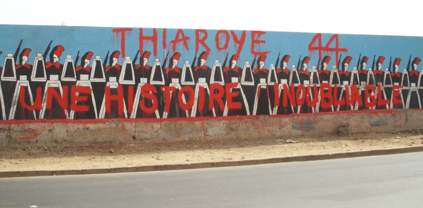
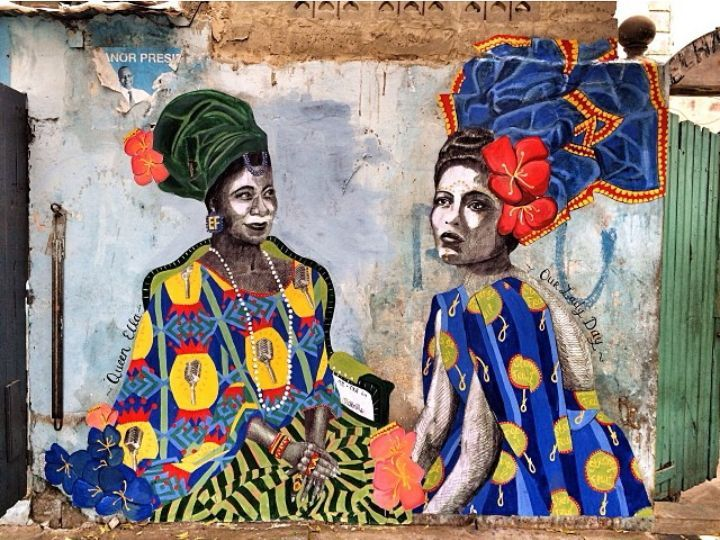
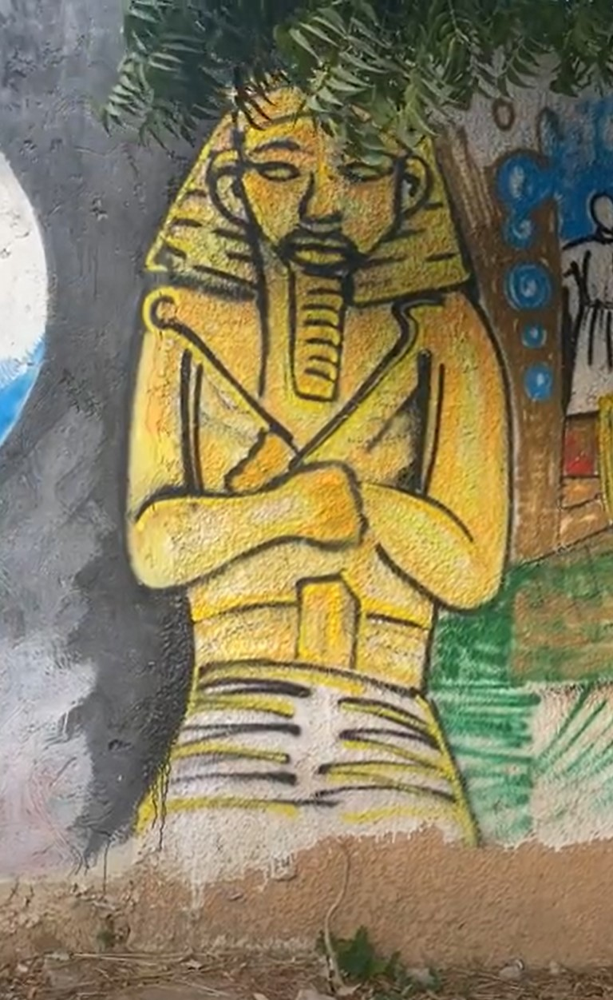
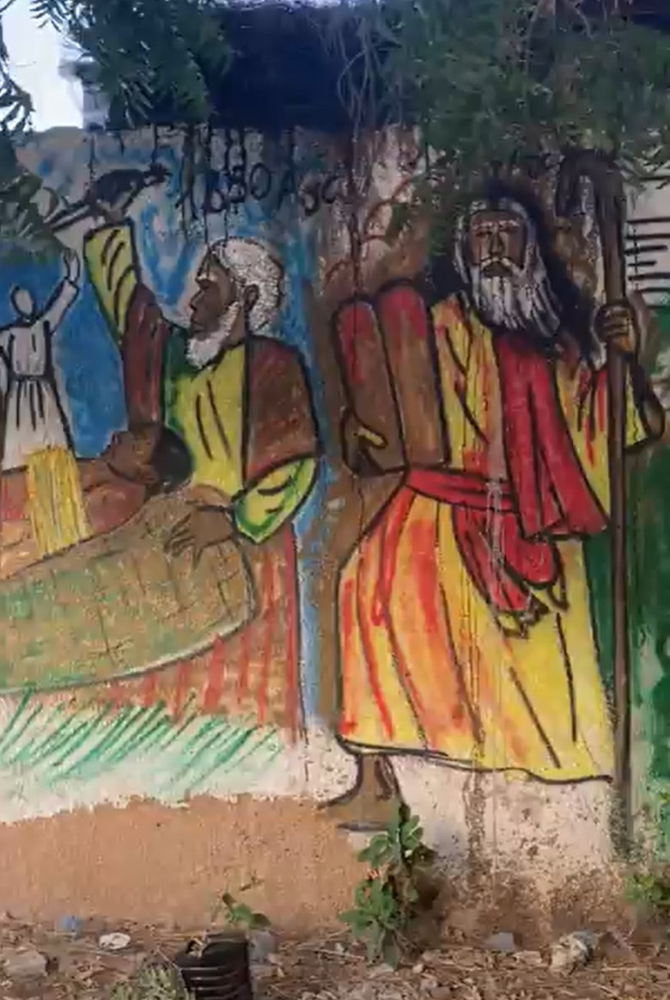
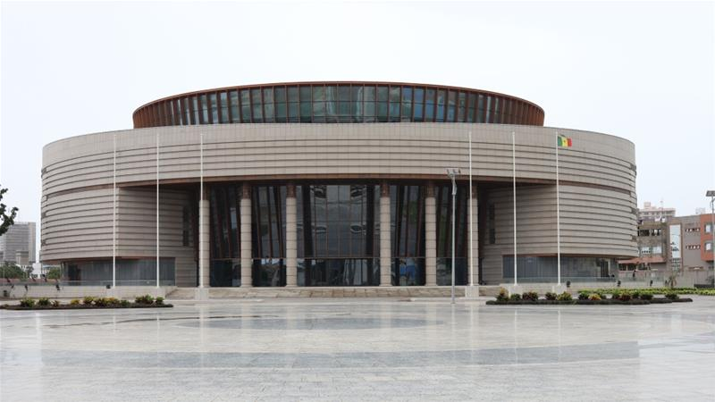
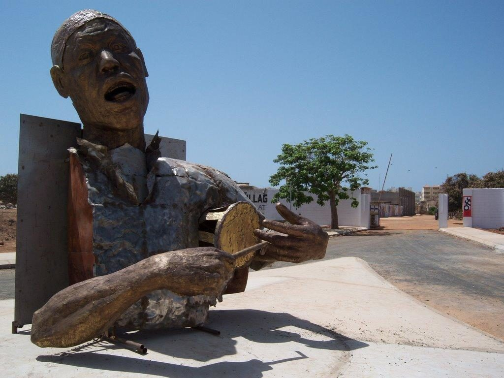
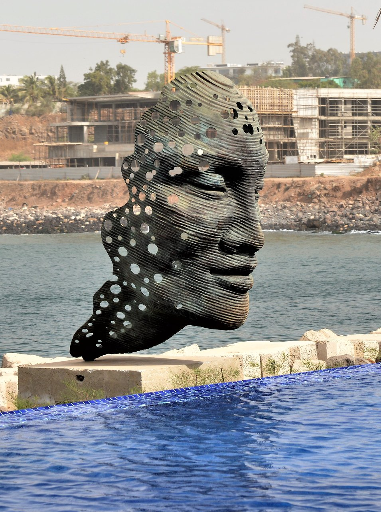
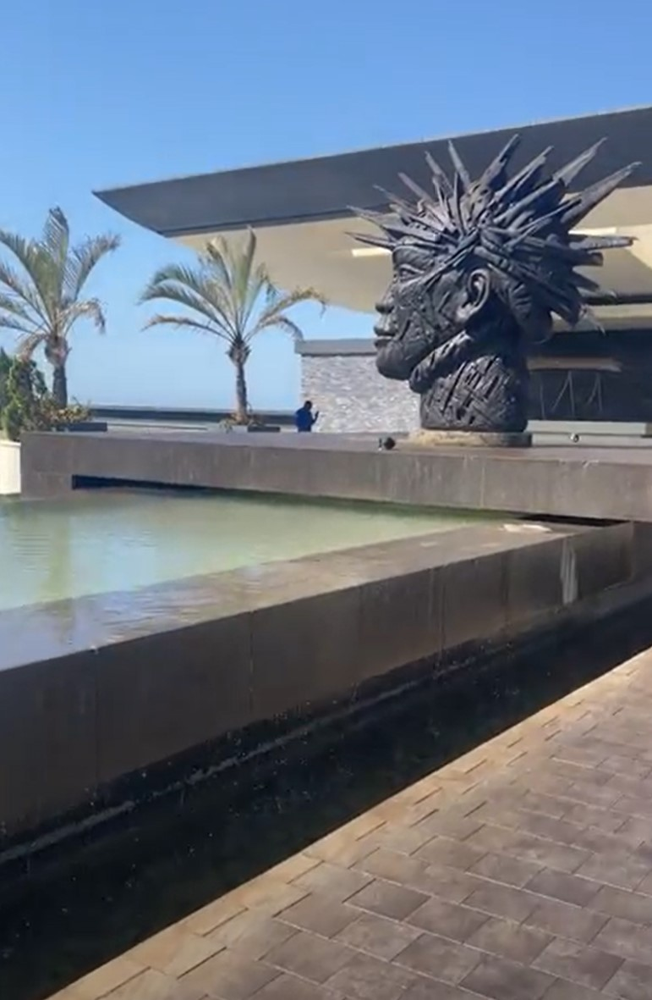
6. Shopping
Dakar is a great place to shop, with a variety of traditional and modern markets offering everything from hand-woven textiles to high-tech electronics. Sandaga is a massive market with indoor malls and outdoor vendors that spans several square blocks.
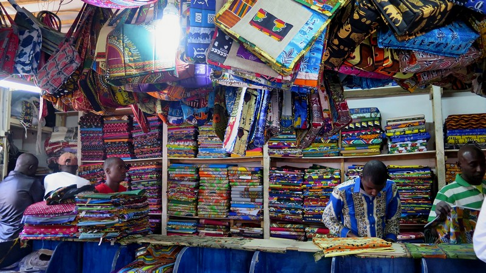
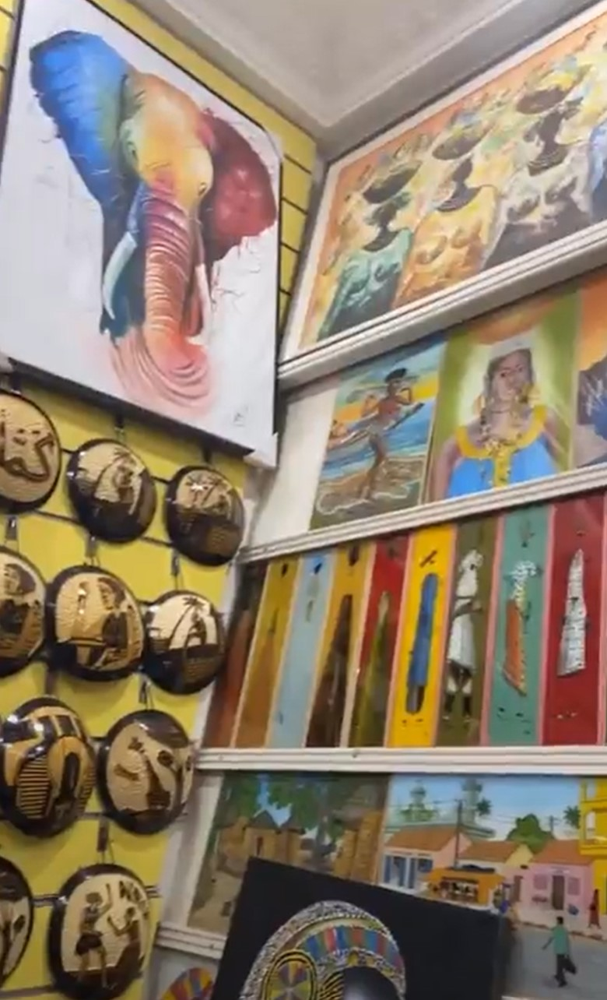
Footnotes
In addition to Dr. Diop, here are just a few of the other scholars who have defended the Africaness of Acient Egypt:
- Dr. John Henrik Clark
- Dr. Yousef Ben Jochanan
- Dr. Ivan van Sertima
- Dr. Theophile Obenga
- Dr. Runoko Rashidi
- Dr. Christopher Ehret
- Mr. Robin Walker
- Dr. Anthony Browder
- And many, many more